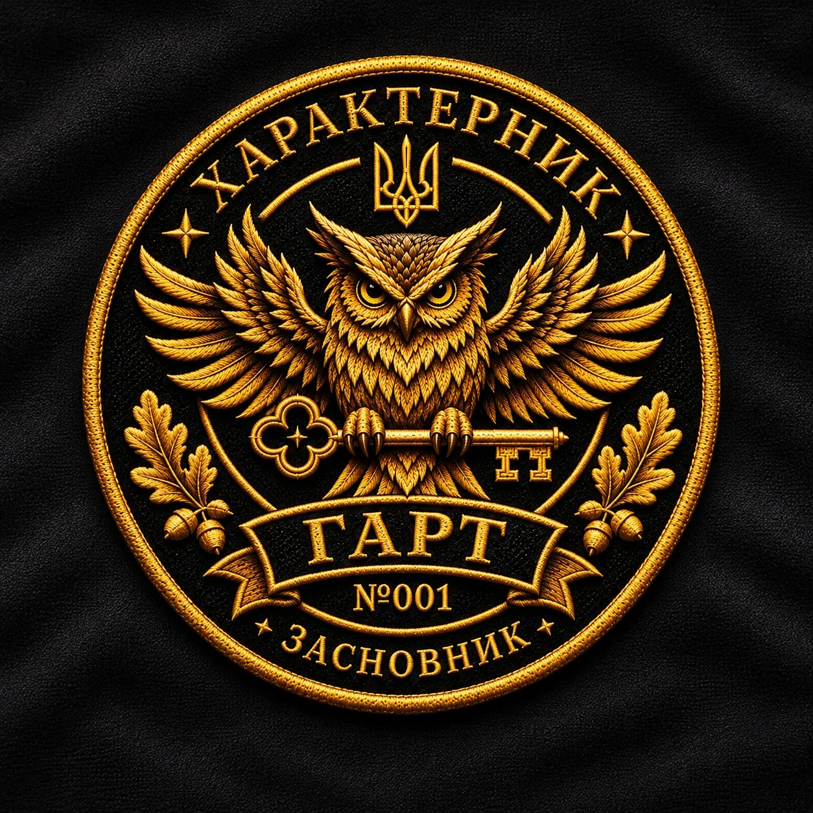

Засновник братства · особистий профіль №001
ГАРТ — Засновник братства
Особистий знак засновника. Початок історії Характерника.

— підтримок
✧ ВІДЗНАКИ ТА ЗАСЛУГИ
Завантажуємо відзнаки…
Особистий шеврон · єдина основа оформлення
✦ ЗАСНОВНИК · №001
ГАРТ
«Гартуй характер. Тримай слово. Підтримуй своїх».
Ідея братства
«Характерник» народився з ідеї об'єднати людей, які прагнуть розвиватися, гартувати характер та підтримувати одне одного.
Тут важливі не гучні титули, а честь, довіра та конкретні вчинки. Кожен проходить власні випробування, вчиться нового й допомагає іншим.
ГАРТ — позивний засновника. №001 залишається знаком початку спільної історії. Кожен наступний учасник творить свою.
Про себе
ГОЛОСИ БРАТСТВА
Обговорення
Думки, запитання та конструктивна критика — з повагою одне до одного.
Коментарі 0
Завантажуємо обговорення… Якщо цей напис не зникає, онови сторінку та перевір підключення.
Увійди до акаунта, щоб підтримати учасника або долучитися до обговорення.
Щоб писати коментарі, відкрий свій позивний у «Залі братства». Це не впливає на приватні дані.